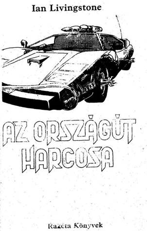
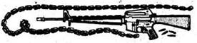
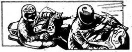
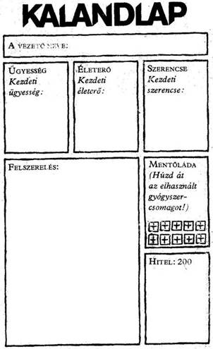
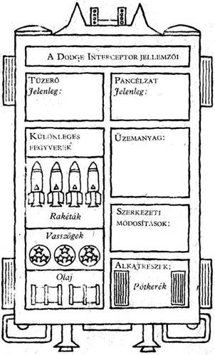
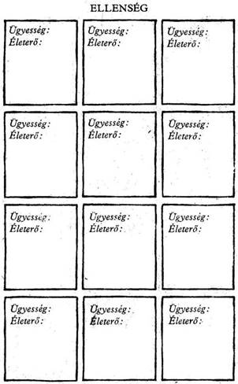
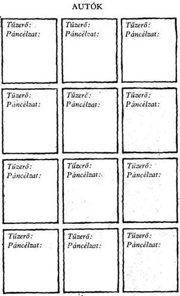
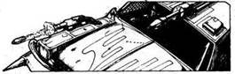
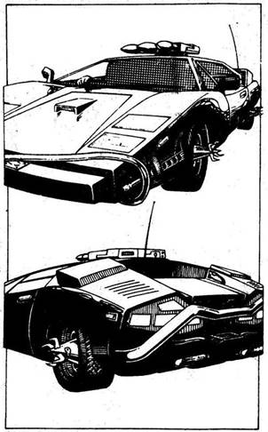

A mű eredeti címe:
Freeway Warrior
Kevin Bulmer illusztrációival
Fordította
Forray Katalin
© Ian Livingstone, 1985
Hungarian translation Forray Katalin, 1989
Egyéni adottságok
Mint a korábbi kalandos, fantasztikus játékregényekben, itt is kockadobással tudod meghatározni adottságaidat, melyeket aztán föl kell jegyezned a Kalandlapra. A következő három adottsággal rendelkezel:
Ügyesség
Dobj egy dobókockával. Adjál 6-ot a kapott számhoz, és az összeget írd a Kalandlap Ügyesség rovatába. Ez a szám autóvezetési, -szerelési tudásodat, küzdőképességedet jelzi. Ügyesség pontjaid növekedhetnek, de csökkenhetnek is utad során, ám soha nem léphetik túl a kezdeti értéket.
Életerő
Dobj két kockával. Adjál 24-et a kapott számhoz, és az összeget jegyezd fel a Kalandlap Életerő rovatába. Életerő pontszámod fizikai állapotodat és erőnlétedet mutatja. Életerőd csökken, amikor megsérülsz. A magaddal vitt mentődoboz tíz gyógyszercsomagot tartalmaz, amelyekkel sebeidet gyógyíthatod. A „kezelés" 4-gyel növeli Életerő pontjaid számát. Bármikor használhatod a mentőládát, kivéve, amikor éppen harcolsz valakivel, de ne feledd el soha áthúzni a Kalandlapon, ha elhasználtál egy gyógyszercsomagot. Azt se feledd, hogy Életerő pontjaid sem léphetik túl kezdeti értéküket.
Szerencse
Dobj egy kockával. Adjál 6-ot a kapott számhoz, és írd az összeget a Kalandlap Szerencse rovatába. Ez a pontszám a Szerencsédet jelzi, azt mutatja, milyen jövő van megírva számodra a sors könyvében. Utad során többször is előfordul majd - küzdelem közben vagy bármely más helyzetben -, hogy próbára teheted a Szerencsédet, remélve, hogy az események kedvezőbben alakulnak. (Ennek a részleteit az adott oldalakon tudod meg.) De jól vigyázz. Kockázatos a Szerencsére építeni, mert ha nincs Szerencséd, az eredmény végzetes lehet.
Szerencsédet a következő módon teheted próbára. Dobj két kockával. Ha a kapott szám akkora vagy kisebb, mint ahány Szerencse ponttal rendelkezel, akkor Szerencséd volt, és az események kedvezően alakulnak. Ám ha a kapott szám magasabb, akkor nem volt Szerencséd, és viselned kell a következményeket. A játékban úgy hívjuk ezt: Tedd próbára Szerencsédet. Minden alkalommal, ahányszor csak próbára teszed Szerencsédet, 1-et le kell vonnod Szerencse pontjaidból. így hamar rádöbbensz arra, hogy minél inkább a Szerencsére hagyatkozol, annál kockázatosabbá válik ez számodra. Szerencse pontjaidat növelheted is, ha néha különlegesen szerencsés voltál. De ne feledd, hogy Szerencse pontjaid sem léphetik túl kezdeti értéküket.

Járműved jellemzői
Autód páncélzatát és fegyverzetét is dobókockák segítségével állapíthatod meg, majd feljegyzed a Kalandlapra. Két alapvető tulajdonságot kell tudnod:
Tűzerő
Dobj egy kockával. Adjál 6-ot a kapott számhoz, és írd az Összeget a Kalandlap Tűzerő rovatába. Ez a szám autód motorjának erejét és géppuskáinak hatékonyságát jelzi. A Tűzerő növekedhet is, csökkenhet is utad során, de soha nem lépheti túl kezdeti értékét. (Az autó rakétavetőjének használatát az Autós Csata cím alatt magyarázzuk el.)
Páncélzat
Dobj két kockával. Adjál 24-et a kapott számhoz, és az összeget jegyezd fel Kalandlapod Páncélzat rovatába. Ez jelzi autód védelmét. A géppuskák és a korlátlan számú golyó mellett az autón különleges fegyverek is vannak, amelyeket úgyszintén felhasználhatsz. Négy rakéta áll rendelkezésedre (lásd: Autós Csata); ezenkívül három doboz vasszög, és két olajtartály a kocsi aljára szerelve. Ezeket akkor használhatod fel, amikor lehetőséget kapsz rá, s ha egyet felhasználtál, ki kell húznod a Kalandlapról.
Tankolhatsz is utad során, de ezt is fel kell tüntetned a Kalandlapon a megfelelő rovatban. Úgyszintén jegyezned kell minden átalakítást, amit
útközben végzel a kocsin, és minden kiegészítő felszerelést. A Páncélzat értéke csökkenhet autód sérülésekor, vagy növekedhet annak javításakor, de soha nem lépheti túl a kezdeti értéket.
Harc
Utad során minden bizonnyal jó néhány gazemberrel találkozol, akik rád támadnak, akár akkor, amikor autódban ülsz, akár akkor, amikor gyalog mész. A játékban háromfajta küzdelem van.
Kézitusa
Ide tartozik mindenféle lőfegyverek nélküli küzdelem, puszta kézzel vagy mondjuk egy hokiütővel. A Kézitusa a következő módon zajlik.
de ha valakit egy tárggyal, mondjuk egy hokiütővel találtak el, további pontokat is le kell vonni.
Tűzharc
Vagyis pisztolyokkal, puskákkal, dobókésekkel, nyilakkal stb. vívott küzdelem (Revolveredhez korlátlanul van muníció). A következőképpen zajlik:
Dobj egy kockával, az így kapott számot vond le a sebesült Életerejéből. Egy golyó példának okáért üthet jelentéktelen felületi sebet, de akár rögtön meg is ölhet.
Autós Csata
Ez többnyire az autókból vívott géppuskacsatát jelenti. Kocsidon egy forgatható toronyra szerelt, számítógép által vezérelt géppuska van, amely minden irányban képes tüzelni, te ezzel harcolsz. Az autós párviadalok a következőképp történnek.
1-6-ig tartó lépéssort), egészen addig, míg Páncélzatod vagy az ellenfél járművéé nullára nem csökkent (kilőve). Feltételezhető, hogy egy kilőtt kocsi vezetője nem éli túl a robbanást vagy a kocsi összeroncsolását.
Ha az Autós Csata során rakétát akarsz kilőni ellenségedre, bármelyik forduló előtt megteheted, de ilyenkor ne feledj egy rakétát kihúzni a Kalandlapról. Automatikusan találsz el és semmisítesz meg bármely célpontot.
Hitel
Hitelnek hívják a XXI. század szükségpénzét. 200 Hitellel kezded utadat (lásd a Kalandlapot), de valószínű, hogy ennél sokkal többet kell költened, illetve megszerezned útközben. Azonban az emberek többsége nem bízik a szükségpénzben, és inkább csencsel. Lehet, hogy példának okáért gyógyszert kell adnod valamiért. Ha így történik, Kalandlapodról húzd ki, amit cseréltél.





Videóhírek, 2022. Július 21.
Senki sem számított a katasztrófára. A harmadik világháborút sikerült elkerülniük a keleti és nyugati nagyhatalmaknak, melyek közösen dolgoztak a világ békéje és egysége érdekében. A mezőgazdaság forradalmi átalakulása elűzte az éhséget. Az utazási lehetőségek növekedésével az emberek jobban megismerték és megértették egymást.
2022. Július 21-e úgy kezdődött, mint bármely másik nap. Az idő jónak ígérkezett, s a holovízió is csupa kellemes hírről számolt be. Egy kormányszóvivő büszkén jelentette be, hogy immár a háztartások 99 százalékát és az ipar 70 százalékát napenergia látja el. Általánossá vált a háromnapos munkahét, és a sydney-i futball-világbajnokságon a döntőt az Egyesült Államok csapata játszotta volna Angliával. Ki gondolta ekkor, hogy néhány óra múlva megkezdődik a civilizáció összeomlása.
Még ezen a napon ismeretlen betegség tört ki, és olyan hihetetlen sebességgel terjedt el, olyan végzetes kimenetelű volt, hogy mire a kormányok és a tudósok rádöbbentek, mi is történik, a népesség fele kihalt. A járvány végigsöpört az egész világon, és mindenütt megtizedelte a lakosságot. Hiába próbálkoztak karanténnal, négy nappal a járvány kitörése után a világ lakosságának 85 százaléka halott volt. Nem maradt senki, aki kideríthette volna, mi okozta a járványt. Talán valami mutáns vírus volt, talán valamely hadiipari laboratóriumból
szabadult el a végzetes baktérium, de mindez puszta találgatás volt, és senki nem törődött igazán vele, már mindenkit csak az érdekelt, hogy túlélje a járványt.
Ijesztő sebességgel dőlt romba a civilizáció. A túlélők nem tudták, minek köszönhetik életüket, sem azt, meddig tart számukra a haladék. A durva erőszak lett a törvény. Részeg zavargások, rombolás lett úrrá. Egy szelet kenyérért már gyilkoltak. A nagyvárosok az éhség és a járványveszély miatt hamar elnéptelenedtek.
Hat hónappal a járvány kitörése után a megmaradt emberiség két részre oszlott; azokra, akik a rendet és a békét akarták, és azokra, akik lubickoltak a zűrzavarban. Az előbbiek megerősített kisvárosokba tömörültek. Vezetőket választottak maguk közül, és megszervezték az önellátást. Katonák, földművesek, orvosok otthonai lettek ezek a kisvárosok, olyan emberekéi, akik újjá akarták építeni a civilizációt. A másik csoport a falakon kívül élte vad, durva életét. Ők voltak az új barbárok. Motoros és autós bandákba tömörülve száguldoztak, terrorizálva és megsemmisítve a civilizáció minden morzsáját.
Te egyike vagy azon szerencsés túlélőknek, akik az Új reménynek nevezett városkában élhetnek. Éppen egy, az eddigieknél hatásosabb riasztórendszeren dolgozol, hogy ezzel is segítsd városodat, amikor kopogtatnak az ajtódon. A városi tanács két tagja az, akik nagyon izgatottnak tűnnek. Elmondják, hogy rádióüzenetet kaptak délről, A San Angló-i megerősített olajfinomítóból. Az ottaniak hajlandók 10000 liter benzint adni gabonáért és vetőmagvakért cserébe. A benzin pedig
igencsak jól jönne Új Remény generátorai és mezőgazdasági gépei számára. 10000 liter ebből a ritka kincsből túl jó lehetőség ahhoz, hogy elszalasszátok. A tanács elfogadta az ajánlatot, és most az a gondja, hogy eldöntse, ki vigye el San Anglóba a terménnyel teli zsákokat és onnan vissza a benzinszállítót. Hosszú és veszélyes út ez, vad, törvénytelen vidéken. Közlik veled, hogy rád gondoltak, téged tart a tanács a legalkalmasabbnak a feladatra. Egy Dodge Interceptort kapsz az útra, felszerelve géppuskákkal, rádióval, tetőre szerelt rakétavetővel, hangosbeszélővel és mindenfajta egyéb védelmi eszközzel, mint például az olajszóró vagy a kerékdöfő lándzsák, páncélzat és golyóálló ablakok.
Nem kéreted magad, mivel a vállalkozás jelentősége óriási. Utad az új társadalmak közötti kapcsolatfelvétel kezdete lehet, ha sikerül. Vállalod a megbízatást, és azonnal megkezded az előkészületeket. A következő két nap azzal telik el, hogy ellenőrzöd az Interceptor előkészítését. Mikor a kocsi útra kész inkább páncélautóra emlékeztet. Még egyszer átvizsgálod, hogy működnek-e a fegyverek, és hogy az összes felszerelés a helyén van-e. Átfutsz a leltáron. Zseblámpák, elsősegélycsomagok, iránytű, élelmiszer, víz, tartalék üzemanyag, két pótkerék, gumijavító készlet és szerszámok. Végül fölveszed a pisztoly táskát és a bőrdzsekit, amelyben a tartalék golyókat és késedet tartod. Miután megnyugodtál, hogy minden rendben van, beülsz a vezetőülésbe. Az acélba vágott keskeny résen át, amely most a szélvédőd,
látod, hogy az egész város összegyűlt, hogy búcsút intsen neked. Beindítod az Interceptor motorját, és a külvilág felé vezető kapuhoz hajtasz. Jó egy éve is annak, hogy utoljára Új Remény falain túl jártál, és kíváncsian várod, mit találsz odakint.
Lapozz az 1-re!

